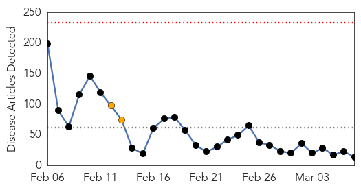

Measles
30-Day Web Trend
0 alerts, 2 warnings

30-Day Twitter Trend
0 alerts, 0 warnings

Article Locations

Article Confidences

Top Articles:
- 0.953
- Update: Measles exposure at Berkeley library is ruled out
- 0.950
- Health officials urge measles vaccinations
- 0.913
- Prevention the Key to Keeping Measles Out of Indian Country
- 0.894
- Measles test results pending for two more North Olympic Peninsula residents -- Port Angeles Port Townsend Sequim Forks Jefferson County Clallam County Olympic Peninsula Daily news
- 0.871
- Berlin measles epidemic reaches new high
- 0.862
- Ohio vaccination rates drop, exemptions climb as debate rages
- 0.852
- Dr. Roach: The facts on getting a measles booster
- 0.841
- Aliso Niguel High School
- 0.722
- Three Day Measles Is Mild to Grown Ups But Deadly To an Unborn Baby
- 0.688
- Kyrgyzstan Starts Measles Prevention Program
- 0.667
- City announces possible measles exposure at Berkeley libraries
- 0.618
- Locals share mild worries about issue
- 0.522
- MMR jab: Somali migrants have lingering fears on autism
Top Tweets:
-
No tweets found for Mar 07, 2015
Hemmorhagic Fever
30-Day Web Trend
0 alerts, 0 warnings

30-Day Twitter Trend
0 alerts, 0 warnings

Article Locations

Article Confidences

Top Articles:
-
No articles found for Mar 07, 2015
Top Tweets:
-
No tweets found for Mar 07, 2015